Next: Diffusion term Up: Conservation of momentum (compressible Previous: Transient term Contents
This term corresponds to
| 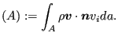 | (542) |
Now, the integral is split into a sum over all element faces:
| 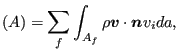 | (543) |
and the integral across a face is evaluated using the convective face value at the center of the face:
| 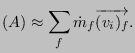 | (544) |
The flux  is taken from the previous iteration:
is taken from the previous iteration:
For the first iteration ( )
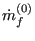 is calculated from the initial
conditions:
)
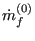 is calculated from the initial
conditions:
| (546) |
where 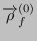 is the convective interpolation through Upwind Difference of the density at the face centers.
For the convective face value in Equation (545) a deferred correction approach is taken based on an upwind scheme, i.e.
| (547) |
This approximation is exact at convergence, for which the values in iteration
 and
and  coincide. By the above approximation all values at iteration
coincide. By the above approximation all values at iteration
 are element center values. Indeed, recall that
are element center values. Indeed, recall that
 is the element center value of 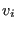,
either of the element at stake (P), or its neighbor, depending on the flow
direction (i.e. the sign of
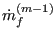). Consequently
is the element center value of 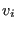,
either of the element at stake (P), or its neighbor, depending on the flow
direction (i.e. the sign of
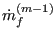). Consequently
The terms within the square bracket with superscript  end up on the
right hand side of the quation, the terms with superscript
end up on the
right hand side of the quation, the terms with superscript  contribute to
the left hand side.
contribute to
the left hand side.
Since velocity boundary conditions are automatically taken into account in the calculation of 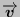 no special treatment is necessary. We have:
For the convective interpolation of the velocity the upwind difference scheme as well as the modified smart scheme (or other high resolution schemes) can be selected.